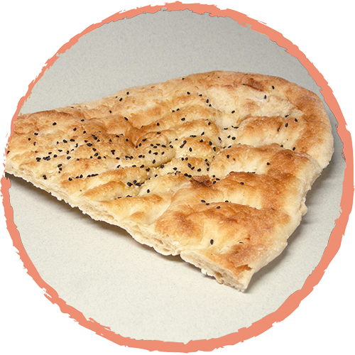

La pizza es un pan plano horneado, habitualmente de forma redonda, elaborado con harina de trigo, sal, agua y levadura, cubierto con salsa de tomate y queso. Existe gran cantidad de variedades, según la forma del pan, la forma de cocinarlo y el agregado de diversos ingredientes y salsas. Su origen es dudoso, pero ha sido tradicionalmente atribuido a la gastronomía de Italia y más puntualmente a la cocina napolitana.
La pizza y la hamburguesa están consideradas las comidas más difundidas del mundo, aunque como consecuencia de la diáspora italiana alcanza máxima presencia en ciudades con alta proporción de descendientes de personas italianas, como Buenos Aires, Chicago y Nueva York.Es un plato de elaboración artesanal en la mayoría de los casos, aunque la industria alimentaria fabrica desde la década de 1950, pizzas preparadas total o parcialmente (prepizza) que se venden en diferentes comercios
Origen 
La pizza entendida de su forma más simple: como la mezcla de una masa de pan elaborada al horno y que se cubre posteriormente con salsa de tomate y queso. Necesita de la concurrencia de todos sus ingredientes para establecer su origen. El pan y el queso son alimentos ciertamente antiguos en la historia de la alimentación. El pan acompaña la humanidad desde el 8000 a. C., y el queso se remonta a tiempos más remotos. Mientras que el tomate aparece en Europa ya en el siglo XVI, no es aceptado por la población como un alimento hasta finales del siglo XVII. Es decir, el origen de la pizza entendida actualmente, no puede datar de antes del siglo XVII. A pesar de ello, es muy posible que existiesen variantes sin salsa de tomate en la gastronomía de Italia, un ejemplo es la focaccia. Autores romanos describen en la literatura alimentos similares, un caso es Catón el Viejo que hace una descripción de la comida del romano medio en forma de pan plano aliñado con diversos condimentos.
Consumo
Hace años que la pizza compite con las hamburguesas para convertirse en el alimento más consumido del mundo. Y, por fin, ha conseguido ser la propuesta gastronómica más popular. A su éxito ha contribuido la gran variedad de ingredientes y combinaciones que permite su masa, su sencilla elaboración y lo cómodamente que se come, casi, en cualquier sitio.
Las cifras demuestran por sí mismas el ‘tirón’ de la pizza en nuestra elección gastronómica: consumimos más de 5.000 millones de pizzas al año; el 20% de los restaurantes del nuestro planeta son pizzerías y se calcula que cada una sirve una media de 55 pedidos de pizza al día.
Pizza en EUA
La pizza llegó a los Estados Unidos con el regreso de sus tropas desde Italia, tras finalizar la Segunda Guerra Mundial. Hoy es el productor y el consumidor mundial de pizza Nº 1, con más de 60.000 pizzerías y un consumo anual de 650 millones de pizzas. Su popularidad llegó hasta el Congreso, que estableció el 9 de febrero día festivo dedicado a la pizza.